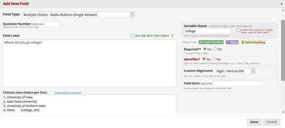

Go to “User Rights” on the left side (under “Applications”).
In the text box labeled “Assign new user”, type the new lab member’s HawkID and click “Assign to Role” (e.g., “RA”, “Grad Student”).
“RA Analyst” is for RAs conducting honors projects who need to do data analysis.
“Project Manager” is for the lab coordinator.
“Add Measures” is for selected RAs who are deemed ready by Dr. Petersen to make edits/additions to measures in REDCap
After assigning them to the correct role, go to “DAGs” on the left side (under “Applications”).
To add an RA to their specific task, go to Project Home → Project Setup → Online Designer → click on name of required task in the left column
Select “Edit” on the “Coder Name” field.
Under “Choices (one choice per line)”, add the subsequent number followed by a comma and the RA’s name.
Click “Save”.
1.2 Creating a new instrument in REDCap
Project Home → Project Setup → Online Designer
In grey box (Data Collection Instruments), click on “+ Create” to create a new instrument from scratch
1.3 Adding fields to an instrument
To edit an instrument, go to: Project Home → Project Setup → Online Designer → click on name of required task in the left column
Select the correct location where question needs to be added and select “Add Field”
Select field type - most frequently we use:
Text Box
Multiple Choice
Yes/No
True/False
Note: For Multiple Choice Questions and Checkboxes, enter one answer choice per line in the box labeled “Choices”
Add variable name:
Variable names must be unique
Variable names within the same instrument should have the same beginning (e.g. all variables within the school information instrument start with “school_”)
Indicate whether question is required
Questions within the same instrument may belong to different sections. To add a new section:
Click “Add Field”
As field type select “Begin New Section (with optional text)
As field label, name the new section
Save
1.4 Branching Logic
Branching logic is a method to link two questions with each other. The answer of Question A will determine whether Question B will be displayed. Typically question A is a checkbox or multiple-choice question. Follow the below steps to use branching logic:
Create all questions to be linked
Click on the green arrow to begin using branching logic
Use the drag and drop builder to create questions to be linked
Use the code to link questions together
Example: When, [other_instrument_name] = '1', show this question
1.5 Field Embedding
Filed embedding is an advanced branching logic method which allows Question B to be directly embedded in Question A, if the relevant answer choice is selected.
Use branching logic to link Question B to Question A, so Question B will only appear if the participant selects “other” for Question A (in our example, variable name for Question A would be college, variable name for Question B: college_other)
Make sure that answer choice “Other” is coded as ‘9’ (see figure 1)
Return to Question A and add several spaces behind the answer choice you would like to embed.
Insert variable you would like to embed in curly brackets {var_name} (in our example this would be {college_other} see figure 1)
Save
When testing the instrument, a textbox should now appear directly behind the answer choice, when selecting “Other” (see below example)

1.6 Designating Instruments to Events
Most instruments in longitudinal studies will need to be desigated accross events. Instruments should already be created and approved before designating to events.
To designate events, follow the below steps:
Go to “Designer” → “Project Setup”
Under the “Define your events and designate instruments for them” section, select Designate Instrument for my events
Select, begin editing and select checkboxes for each event to designate the instrument to
Important: Update the roles in User Rights to be able to view and edit the newly designated instrument
1.7 Designating Instruments as Repeatable
Some instruments will be designated as repeatable. These events will first need to be designated accross events (See section on designating events). Tasks that require multiple people to create the same form will often need to be repeatable. For example, coding tasks that require multiple people to check accross forms for reliability.
To designate forms repeatable, follow the below steps: 1. Under “Enable optional modules and customizations”, select Repeatable instruments and events 1. Select instruments to be designated repeatable